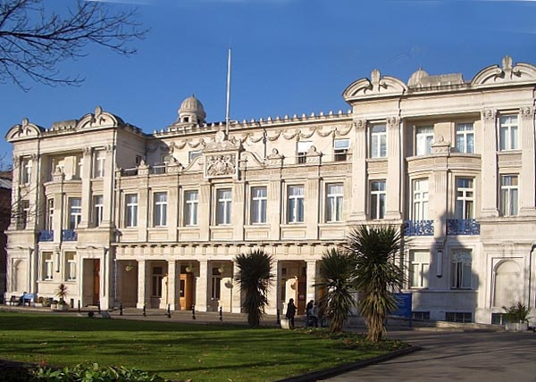

Algebra and Coalgebra meet Proof TheoryALCOP 2014
|
 |
Aims and Scope
The aim of this workshop is to bring together experts in algebra, coalgebra, and proof theory to share ideas and methods.Program DAY 1 - Thursday 15 May
| 09.15 - 10.00 |
Samson
Abramsky (invited) |
Game Theory for Dependent Type Theory
(slides) |
| 10.00 - 10.30 |
George Metcalfe |
From Admissible Rules to (New) Unification Types (slides) |
| 10.30 - 11.00 |
Coffee break |
|
| 11.00 - 11.30 |
Jeroen Goudsmit |
Admissibility and Unification (slides) |
| 11.30 - 12.00 |
Rosalie Iemhoff |
Cuts and Completions (slides) |
| 12.00 - 14.00 |
Lunch |
|
| 14.00 - 14.45 |
Michael
Rathjen (invited) |
Indefiniteness of Mathematical Problems? (slides) |
| 14.45 - 15.15 |
Clemens Kupke |
Modal mu-calculus on Topological Spaces (slides) |
| 15.15 - 16.15 |
Coffee break |
|
| 16.15 - 16.45 |
Dick De Jongh | Subframe Formulas and Stable Formulas in Intuitionistic Logic (slides) |
| 16.45 - 17.15 |
Marco Carbone |
Choreographies, Logically (slides) |
| 19.00 - 21.00 |
Workshop dinner
(Muhib Restaurant,
73 Brick Lane, London, E1 6RL) |
|
Program DAY 2 - Friday 16 May
| 09.15 - 10.00 |
Sara Negri (invited) | Proof Sytems for First-order Theories (slides) |
| 10.00 - 10.30 |
Marta Bilkova |
On Model Theory of Bi-approximation Semantics for Substructural Logics (slides) |
| 10.30 - 11.00 |
Coffee break |
|
| 11.00 - 11.30 |
Sabine Frittella |
Relational and Final Coalgebra Semantics for Dynamic Logic (slides) |
| 11.30 - 12.00 |
Giuseppe Greco |
Cut-elimination for Multi-type Display Calculi (slides) |
| 12.00 - 14.00 |
Lunch |
|
| 14.00 - 14.45 |
Marcelo
Fiore (invited) |
Algebraic Theories and Control Effects, Back and Forth (slides) |
| 14.45 - 15.15 |
Jiri Velebil | V-cat-ification of Set Functors (slides) |
| 15.15 - 16.00 |
Coffee break |
|
| 16.00 - 16.45 |
Bart Jacobs (invited) | Logic of Effects (slides) |
| Alessandra Palmigiano |
Universiry of Delft |
| Alexander Kurz | University of Leicester |
| Antonin Delpeuch |
Ecole Normale Superieure, Paris |
| Bart Jacobs |
Radboud University Nijmegen |
| Clemens Kupke |
University of Strathclyde |
| Daniel Marsden |
Oxford University |
| Dick De Jongh | University of Amsterdam |
| Edmund Robinson |
Queen Mary University of London |
| Gabrielle Anderson |
University College London |
| George Metcalfe |
University of Bern |
| Graham White |
Queen Mary University of London |
| Hooman Safizadeh |
|
| Jiri Velebil |
Czech Technical University Prague |
| Jeroen Goudsmit |
Utrecht University |
| Jules Hedges |
Queen Mary University of London |
| Klaus Draeger |
Queen Mary University of London |
| Kwok Cheung |
University of Oxford |
| Leonardo Cabrer |
University of Firenze |
| Marcelo Fiore |
University of Cambridge |
| Marco Carbone |
Copenhagen IT University |
| Marta Bilkova |
Charles University Prague |
| Mehrnoosh Sadrzadeh | Queen Mary University of
London |
| Michael Rathjen |
University of Leeds |
| Nikos Tzevelekos |
Queen Mary University of London |
| Paulo Oliva | Queen Mary University of
London |
| Paul Taylor |
|
| Rob Arthan |
Queen Mary University of London |
| Rosalie Iemhoff |
Utrecht University |
| Samson Abramsky |
Oxford University |
| Sara Negri |
University of Helsinki |
| Yoshihiro Maruyama |
Oxford University |